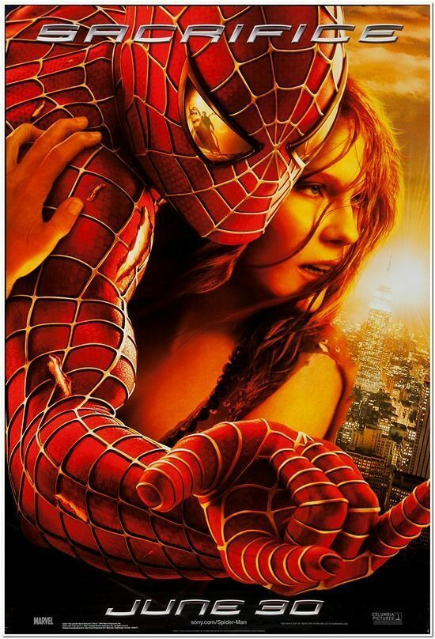
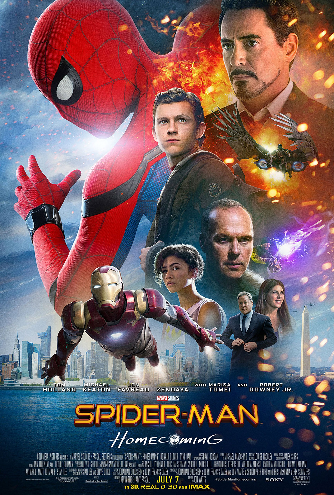

Spider-man 1
Spider-Man is a 2002 American superhero film based on the Marvel Comics character of the same name. Directed by Sam Raimi from a screenplay by David Koepp, it is the first installment in the Spider-Man trilogy, and stars Tobey Maguire as the titular character, alongside Willem Dafoe, Kirsten Dunst, James Franco, Cliff Robertson, and Rosemary Harris. The film centers on outcast teen genius Peter Parker who develops spider-like superhuman abilities after being bitten by a genetically-altered spider and decides to use his newfound powers to fight crime as Spider-Man.
More

Spider-man 2
Spider-Man 2 is a 2004 American superhero film directed by Sam Raimi and written by Alvin Sargent from a story by Alfred Gough, Miles Millar and Michael Chabon. Based on the fictional Marvel Comics character of the same name, it is the second installment in the Spider-Man trilogy and the sequel to Spider-Man (2002), starring Tobey Maguire alongside Kirsten Dunst, James Franco, Alfred Molina, Rosemary Harris, Donna Murphy, and J. K. SimmonSpider-Man is a 2002 American superhero film based on the Marvel Comics character of the same name. Directed by Sam Raimi from a screenplay by David Koepp, it is the first installment in the Spider-Man trilogy, and stars Tobey Maguire as the titular character, alongside Willem Dafoe, Kirsten Dunst, James Franco, Cliff Robertson, and Rosemary Harris. The film centers on outcast teen genius Peter Parker who develops spider-like superhuman abilities after being bitten by a genetically-altered spider and decides to use his newfound powers to fight crime as Spider-Man.
More
Spider-man 1
Spider-Man 3 is a 2007 American superhero film based on the Marvel Comics character Spider-Man. It was directed by Sam Raimi from a screenplay by Raimi, his older brother Ivan and Alvin Sargent. It is the final installment in Raimi's Spider-Man trilogy. The film stars Tobey Maguire as Peter Parker / Spider-Man, alongside Kirsten Dunst, James Franco, Thomas Haden Church, Topher Grace, Bryce Dallas Howard, James Cromwell, Rosemary Harris, and J. K. Simmons. The film also marks the final film appearance of Cliff Robertson before his retirement and death in 2011. Set a year after the events of Spider-Man 2, the film follows Peter Parker as he prepares for his future with Mary Jane Watson, while facing three new villains: Uncle Ben's true killer, Flint Marko, who becomes Sandman after a freak accident; Harry Osborn, his former friend, who is now aware of Peter's identity and seeks to avenge his father; and Eddie Brock, a rival photographer. Peter also faces his greatest challenSpider-Man is a 2002 American superhero film based on the Marvel Comics character of the same name. Directed by Sam Raimi from a screenplay by David Koepp, it is the first installment in the Spider-Man trilogy, and stars Tobey Maguire as the titular character, alongside Willem Dafoe, Kirsten Dunst, James Franco, Cliff Robertson, and Rosemary Harris. The film centers on outcast teen genius Peter Parker who develops spider-like superhuman abilities after being bitten by a genetically-altered spider and decides to use his newfound powers to fight crime as Spider-Man.
More

Amazing Spider-man
The Amazing Spider-Man is a 2012 American superhero film based on the Marvel Comics character Spider-Man and sharing the title of the character's longest-running comic book series of the same name. It is the fourth theatrical Spider-Man film produced by Columbia Pictures and Marvel Entertainment, a reboot of the series following Sam Raimi's 2002–2007 Spider-Man trilogy, and the first of the two The Amazing Spider-Man films. The film was directed by Marc Webb and written by James Vanderbilt, Alvin Sargent and Steve Kloves from a story by Vanderbilt, and stars Andrew Garfield as Peter Parker / Spider-Man alongside Emma Stone, Rhys Ifans, Denis Leary, Campbell Scott, Irrfan Khan, Martin Sheen, and Sally Field. In the film, after Parker is bitten by a genetically altered spider, he gains newfound, spider-like powers and ventures out to save the city from the machinations of a mysterious reptilian foe.Spider-Man is a 2002 American superhero film based on the Marvel Comics character of the same name. Directed by Sam Raimi from a screenplay by David Koepp, it is the first installment in the Spider-Man trilogy, and stars Tobey Maguire as the titular character, alongside Willem Dafoe, Kirsten Dunst, James Franco, Cliff Robertson, and Rosemary Harris. The film centers on outcast teen genius Peter Parker who develops spider-like superhuman abilities after being bitten by a genetically-altered spider and decides to use his newfound powers to fight crime as Spider-Man.
More
Amazing Spider-man 2
The Amazing Spider-Man 2 (internationally titled The Amazing Spider-Man 2: Rise of Electro)[6] is a 2014 American superhero film based on the Marvel Comics character Spider-Man. The film was directed by Marc Webb and produced by Avi Arad and Matt Tolmach. It is the fifth theatrical Spider-Man film produced by Columbia Pictures and Marvel Entertainment, the sequel to The Amazing Spider-Man (2012), and the final film in The Amazing Spider-Man series. The studio hired James Vanderbilt to write the screenplay and Alex Kurtzman and Roberto Orci to rewrite it.[7][8] The film stars Andrew Garfield as Peter Parker / Spider-Man, alongside Emma Stone, Jamie Foxx, Dane DeHaan, Campbell Scott, Embeth Davidtz, Colm Feore, Paul Giamatti, and Sally Field. In the film, Peter Parker tries to protect Gwen Stacy as he investigates his parents' death, while also dealing with the supervillain Electro and the return of his childhood friend Harry Osborn, who is dying from a deadly genetic disease.Spider-Man is a 2002 American superhero film based on the Marvel Comics character of the same name. Directed by Sam Raimi from a screenplay by David Koepp, it is the first installment in the Spider-Man trilogy, and stars Tobey Maguire as the titular character, alongside Willem Dafoe, Kirsten Dunst, James Franco, Cliff Robertson, and Rosemary Harris. The film centers on outcast teen genius Peter Parker who develops spider-like superhuman abilities after being bitten by a genetically-altered spider and decides to use his newfound powers to fight crime as Spider-Man.
More

Marvel Spider-man 1
Spider-Man: Homecoming is a 2017 American superhero film based on the Marvel Comics character Spider-Man, co-produced by Columbia Pictures and Marvel Studios, and distributed by Sony Pictures Releasing. It is the second Spider-Man film reboot and the 16th film in the Marvel Cinematic Universe (MCU). The film was directed by Jon Watts, from a screenplay by the writing teams of Jonathan Goldstein and John Francis Daley, Watts and Christopher Ford, and Chris McKenna and Erik Sommers. Tom Holland stars as Peter Parker / Spider-Man, alongside Michael Keaton, Jon Favreau, Gwyneth Paltrow, Zendaya, Donald Glover, Jacob Batalon, Laura Harrier, Tony Revolori, Bokeem Woodbine, Tyne Daly, Marisa Tomei, and Robert Downey Jr. In Spider-Man: Homecoming, Peter Parker tries to balance high school life with being Spider-Man while facing the Vulture (Keaton).Spider-Man is a 2002 American superhero film based on the Marvel Comics character of the same name. Directed by Sam Raimi from a screenplay by David Koepp, it is the first installment in the Spider-Man trilogy, and stars Tobey Maguire as the titular character, alongside Willem Dafoe, Kirsten Dunst, James Franco, Cliff Robertson, and Rosemary Harris. The film centers on outcast teen genius Peter Parker who develops spider-like superhuman abilities after being bitten by a genetically-altered spider and decides to use his newfound powers to fight crime as Spider-Man.
More

Marvel Spider-man 2
Spider-Man: Far From Home is a 2019 American superhero film based on the Marvel Comics character Spider-Man, co-produced by Columbia Pictures and Marvel Studios, and distributed by Sony Pictures Releasing. It is the sequel to Spider-Man: Homecoming (2017) and the 23rd film in the Marvel Cinematic Universe (MCU). The film was directed by Jon Watts, written by Chris McKenna and Erik Sommers, and stars Tom Holland as Peter Parker / Spider-Man, alongside Samuel L. Jackson, Zendaya, Cobie Smulders, Jon Favreau, J. B. Smoove, Jacob Batalon, Martin Starr, Marisa Tomei, and Jake Gyllenhaal. In the film, Parker is recruited by Nick Fury (Jackson) and Mysterio (Gyllenhaal) to face the Elementals while he is on a school trip to Europe.Spider-Man is a 2002 American superhero film based on the Marvel Comics character of the same name. Directed by Sam Raimi from a screenplay by David Koepp, it is the first installment in the Spider-Man trilogy, and stars Tobey Maguire as the titular character, alongside Willem Dafoe, Kirsten Dunst, James Franco, Cliff Robertson, and Rosemary Harris. The film centers on outcast teen genius Peter Parker who develops spider-like superhuman abilities after being bitten by a genetically-altered spider and decides to use his newfound powers to fight crime as Spider-Man.
More

Spider-man 1
Spider-Man: No Way Home is a 2021 American superhero film based on the Marvel Comics character Spider-Man, co-produced by Columbia Pictures and Marvel Studios and distributed by Sony Pictures Releasing. It is the sequel to Spider-Man: Homecoming (2017) and Spider-Man: Far From Home (2019), and is the 27th film in the Marvel Cinematic Universe (MCU). The film is directed by Jon Watts and written by Chris McKenna and Erik Sommers, and stars Tom Holland as Peter Parker / Spider-Man alongside Zendaya, Benedict Cumberbatch, Jacob Batalon, Jon Favreau, Jamie Foxx, Willem Dafoe, Alfred Molina, Benedict Wong, Tony Revolori, Marisa Tomei, Andrew Garfield, and Tobey Maguire. In the film, Parker asks Dr. Stephen Strange (Cumberbatch) to make his identity as Spider-Man a secret again with magic after its public revelation in Far From Home, but this breaks open the multiverse and allows five supervillains from alternate realities to enter Parker's universe.Spider-Man is a 2002 American superhero film based on the Marvel Comics character of the same name. Directed by Sam Raimi from a screenplay by David Koepp, it is the first installment in the Spider-Man trilogy, and stars Tobey Maguire as the titular character, alongside Willem Dafoe, Kirsten Dunst, James Franco, Cliff Robertson, and Rosemary Harris. The film centers on outcast teen genius Peter Parker who develops spider-like superhuman abilities after being bitten by a genetically-altered spider and decides to use his newfound powers to fight crime as Spider-Man.
More